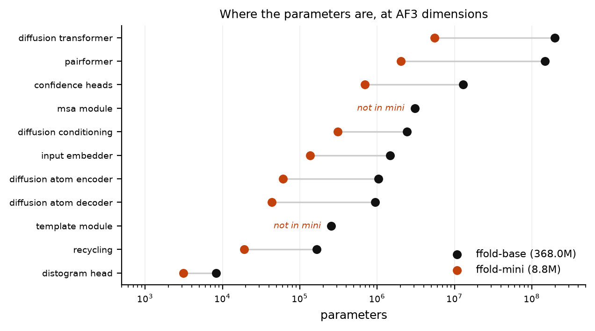
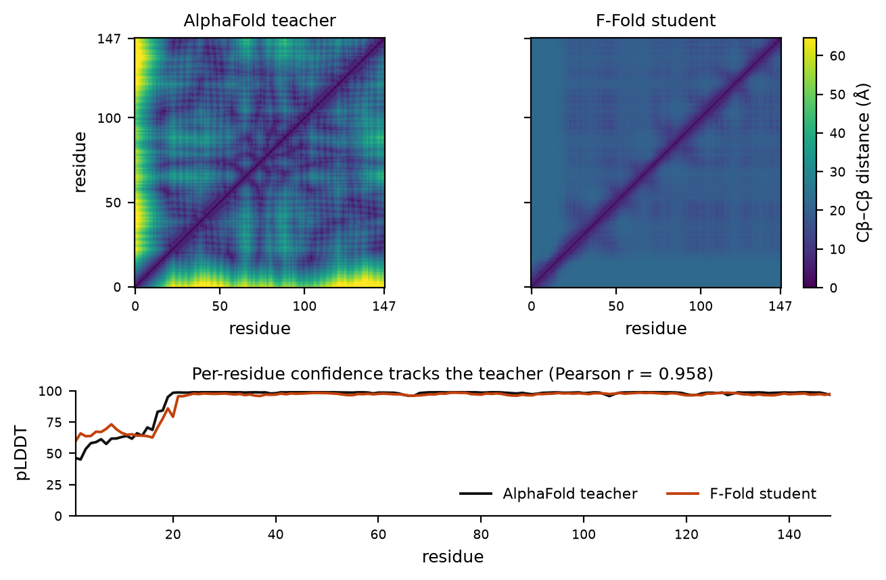

An AlphaFold3-architecture model whose hyperparameters are machine-verified against OpenFold3-preview — and small enough to train, not just run, on a single 15 GB GPU.
These are experimental crystal structures from the RCSB PDB, not F-Fold predictions. They show the Wnt/β-catenin complexes this project is aimed at; F-Fold does not yet produce usable folds (see results). Coordinates are trimmed to one biological copy with waters and cryoprotectants removed.
F-Fold is an independently written implementation of the AlphaFold3 architecture — Pairformer, MSA module, template stack, diffusion module and all five confidence heads — at the exact tensor dimensions used by OpenFold3-preview, the AlQuraishi Lab / OpenFold consortium's Apache-2.0 AF3 reproduction. It ships with a distillation pipeline that turns AlphaFold DB structures into your own trained weights.
What it is not: a competitor to AlphaFold on accuracy. The trained preset is distilled from AlphaFold, so AlphaFold is its ceiling by construction, not its benchmark. It has no MSA search, no templates, and no all-atom output in the trained path. The structures it produces today are not correct folds — see measured results, where we report that plainly. If you need accurate structures, use AlphaFold2, OpenFold3, Boltz-2 or Chai-1.
What F-Fold offers instead is reproducible architectural fidelity at a hardware tier where AF3-class models are otherwise unreachable, with every number on this page generated by a script in the repository.
ffold-baseffold-miniffold/config.py is written by hand against the AF3
specification. It is deliberately not generated from
OpenFold3's config — that is what makes the comparison a test rather than a
tautology. ffold/check_alignment.py extracts the reference from the
openfold3==0.4.1 source distribution, diffs every shape-bearing
field, and exits non-zero on any disagreement, so it can run in CI.
$ python ffold/check_alignment.py
match: 203
$ echo $?
0Kernel selection, memory offloading, activation checkpointing and weight-initialisation policy are explicitly excluded — they do not change tensor shapes. Everything that does is compared. The base dimensions:
| Field | Value | Field | Value |
|---|---|---|---|
c_s — single/token | 384 | c_atom | 128 |
c_z — pair | 128 | c_atom_pair | 16 |
c_m — MSA | 64 | c_token_embedder | 384 |
c_t — template | 64 | c_token_diffusion | 768 |
c_s_input | 449 | sigma_data | 16 |
Stack depths: Pairformer 48 blocks (16 pair-bias heads, c_hidden
24); diffusion transformer 24 blocks (16 heads, c_hidden 48); MSA
module 4; template pair stack 2; confidence Pairformer 4; atom encoder and
decoder 3 each. Label spaces: distogram 64 bins over 2–22 Å, pLDDT 50 bins,
PAE and PDE 64 bins over 0–32 Å. Diffusion follows the EDM schedule with
s_max 160, s_min 4×10⁻⁴, p 7.

ffold-base. ffold-mini narrows widths roughly 3× and
depths 6×, and omits the MSA and template modules entirely. Counts come from
meta-device instantiation, so the 368M preset is audited without allocating
it. These are F-Fold's own counts — not a claim about the OpenFold3
checkpoint, which is gated and was never inspected.The honest axes of comparison are licensing, hardware floor and trainability — not accuracy, where F-Fold loses decisively and by construction. Accuracy is included in the table anyway, because leaving it out would be the dishonest move.
| AlphaFold2 | AlphaFold3 | OpenFold3-preview | F-Fold | |
|---|---|---|---|---|
| Source-code licence | Apache-2.0 | Apache-2.0 (was CC-BY-NC-SA 4.0 at the Nov 2024 release) | Apache-2.0 | Apache-2.0 |
| Model weights | CC BY 4.0, public download | Request form; non-commercial organisations only; redistribution prohibited | Apache-2.0, but gated behind a HuggingFace access form | You train them. Nothing to request, nothing gated |
| Commercial use of weights | Permitted | Prohibited | Permitted once access is granted | Yours |
| Outputs may train similar predictors | AlphaFold DB is CC BY 4.0 | Explicitly prohibited by the parameter terms | Not restricted | Yours |
| Molecule types | Protein, protein complexes | Protein, DNA, RNA, ligands, ions | Protein, DNA, RNA, ligands | Protein only in the trained path |
| Published minimum VRAM | not stated here | not stated here | 24 GB inference (80 GB recommended) | 15 GB trains ffold-mini (5.9 GB measured peak) |
| Train or fine-tune it yourself | No training code released | No training code released | Yes — but at AF3 scale | Yes, on one consumer GPU |
| Structure accuracy | Experimental-level on many monomers | AlphaFold2-level and above, incl. interactions | Targets bitwise AF3 reproduction | Not usable — TM-score 0.200 |
Read that last row before anything else. On every axis that measures structural accuracy, AlphaFold and OpenFold3 win and F-Fold loses. F-Fold's teacher is AlphaFold, so it cannot exceed it. What the table shows is that a different, narrower thing — an AF3-dimension model you can actually train, own and relicense on hardware you already have — is achievable; not that it predicts better.
Licence terms are summarised from the AlphaFold 3
repository and its WEIGHTS_TERMS_OF_USE.md, the AlphaFold 2
repository, and the OpenFold3 model card, each as published at the time of
writing; the VRAM row quotes only figures this project verified. Terms change
— check the upstream licences yourself before relying on any of this. This is
a summary, not legal advice. F-Fold's teacher labels come from the AlphaFold
Protein Structure Database under CC BY 4.0, not from AlphaFold 3
parameters or AlphaFold Server output.
A 1,723-structure teacher set was built from AlphaFold DB v6
(retrieved 2026-10-24): reviewed UniProt sequences of 60–256 aa,
k-mer-deduplicated at a 0.30 shared-5-mer ceiling, with models below mean pLDDT
70 discarded as predicted disorder rather than folds. Human lysozyme C
(P61626, 148 aa, teacher mean pLDDT 94.1) was held out and
excluded from training by both accession and sequence similarity.
ffold-mini was trained on one Tesla T4 with AMP and gradient
checkpointing, batch 8 at crop 160. The run was stopped by a 2-hour wall clock
at step 2,000 of 8,000, so these numbers describe a
quarter-trained model, not a converged one.
| Metric | F-Fold | Reference point |
|---|---|---|
| Distogram cross-entropy (held-out) | 2.633 | 4.159 = uniform over 64 bins |
| Distogram cross-entropy (validation) | 2.211 | at the saved checkpoint |
Contact precision P@L/5, |i−j|≥12 | 0.310 | 0.022 = base rate of <8 Å pairs at this separation |
Contact precision P@L/5, |i−j|≥24 | 0.034 | 0.018 base rate — essentially no long-range signal |
| pLDDT correlation with teacher (Pearson) | 0.958 | Spearman 0.670 |
| Cβ RMSD to teacher after Kabsch | 14.31 Å | 1.19 Å from teacher distances |
| TM-score to teacher | 0.200 | <0.17 is random; >0.5 is the same fold |
The control matters more than the headline. Feeding the teacher's own distance matrix through the identical MDS-plus-refinement reconstruction recovers the structure to 1.19 Å. The reconstruction code is therefore sound, and the 14.31 Å result is attributable to the model's predicted distances — specifically its missing long-range contacts — rather than to a bug in the geometry pipeline. That is the distinction a reviewer would ask for first.

P61626,
148 residues; teacher is AlphaFold DB v6.ffold-base has never been trained — only
audited for parameter count and forward-pass shape correctness. Training it
needs hundreds of GPU-days.git clone https://github.com/zhu-algorithm/f-fold
cd f-fold && pip install -r requirements.txt
python ffold/check_alignment.py # 203/203, exit 0
python ffold/audit_params.py # parameter table
python ffold/build_dataset.py --n 2800 --min-plddt 70
python ffold/train.py --auto-batch --amp --grad-checkpoint --crop 160
python ffold/evaluate.py # metrics vs the AlphaFold teacherApache-2.0. no gated weights no redistributed checkpoints
Hyperparameter values are extracted from OpenFold3-preview (Apache-2.0, © 2026 AlQuraishi Laboratory; © 2026 Advanced Micro Devices, Inc.). No OpenFold3 model weights are redistributed. Teacher labels derive from the AlphaFold Protein Structure Database (EMBL-EBI / DeepMind, CC BY 4.0).